1 关于系统
1.1 系统简介
三维GIS教学系统主要包括地理空间认知模块、虚拟三维仿真显示模块、三维仿真互动模块、地理编辑模块和模型库管理模块五大功能模块。
1.1.1 地理空间认知模块
通过该模块主要帮助中学生认知地球经线、纬线、本初子午线、赤道、南北回归线、南北极圈、东西半球和南北半球的分布；认识地图比例尺表达方式及其作用，了解地图方位，知道图例和注记的作用；了解海陆分布及陆地地形；知道我国和世界主要国家的地理分布等等基础地理知识。
1.1.2 虚拟三维仿真显示模块
该模块主要包括丘陵、高山、平原等地形地貌特征和城市建筑物的三维可视化显示。可以变换视角、实现导航、放大、缩小、全景视图、漫游等GIS常用操作。
1.1.3 三维仿真互动模块
该模块主要包括对定位到的城市进行第一人称视角的直观操作浏览；对两个城市查询的线路进行模拟导航；对定位到的城市进行飞机飞行浏览。
1.1.4 地理编辑模块
该模块应该能够实现对地图的编辑功能，用户可添加兴趣点、线路和区域。
1.1.5 模型库管理模块
该模块包括各种以dae形式存储的地理模型，如水立方、人民英雄纪念碑，埃菲尔铁塔等等。可以控制模型的显示、定位和关闭。
1.2 产品特点
1.2.1 开发方式
系统主要以NASA WorldWind
API结合HTML/CSS/JavaScript开发定制出自己特色的应用系统。
1.2.2 运行环境
支持win7、win8.1、win10操作系统。
1.2.3 应用
主要针对地理教学。
1.3 主要功能
1.3.1 场景相关操作
添加地标、多边形和路径；场景的浏览、放大、缩小、任意缩放等以及场景中各元素的显示控制：包括3D建筑、边界、道路、高程、树等的显示，以及状态栏、网格、总览图、比例图例的显示；并可以在场景中观察外太空，模拟太阳照射的情况。
1.3.2 搜索相关操作
可对指定的全球的地址进行搜索，并可对两个已知的地名进行线路规划。
1.3.3 三维互动功能操作
可对搜索出来的结果进行互动操作及模拟导航等一系列操作。
1.3.4 模型库操作
可对模型库进行显示、定位和关闭操作；并支持把模型库的文件在三维球体进行直观的展示。
2 系统操作指南
2.1 菜单
系统的菜单主要包括：开始、视图、三维模型、三维仿真、模型演示和搜索。
2.1.1 开始

开始菜单提供了添加注释、删除注释、添加地标、删除地标、添加图形、删除图形、添加路径、删除路径、全幅显示、刷新视图、地址定位、打印屏幕、帮助文档。下面详细介绍开始菜单上各项的作用及具体操作方式。
·添加注释：主要提供了在三维球体上指定的位置添加说明性文字，并且可以实时变更文字的内容、颜色、透明度、高度等等。
操作方式：
1、点击【添加注释】按钮，会弹出注释标签的属性修改窗体：
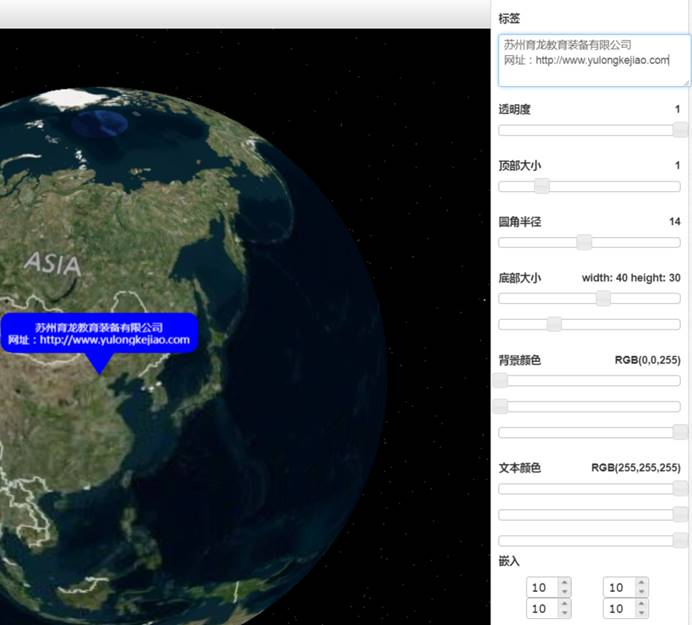
2、在属性修改窗体上可以自定义标签样式：
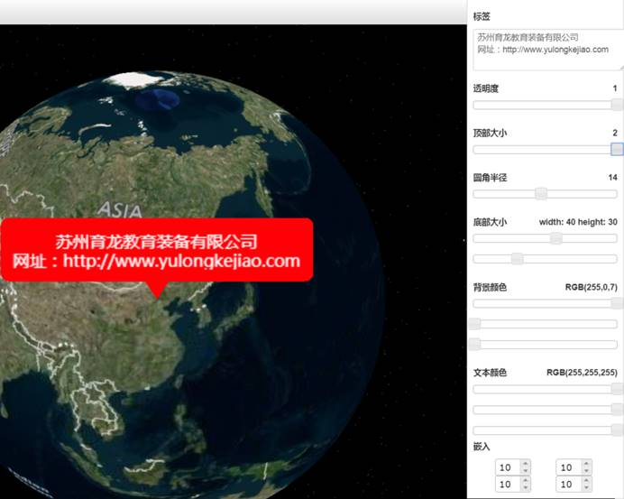
3、若是想要在指定位置添加注释标签，先鼠标单击目标位置，再点击【添加注释】按钮，这里我以北极为例，在北极添加注释标签：

·删除注释：点击之后删除添加的标签。
·添加地标：主要提供了在三维球体上指定的位置添加地标的功能。
操作方式：
1、单击【添加地标】按钮，三维球体上会显示出红绿相间的地标：
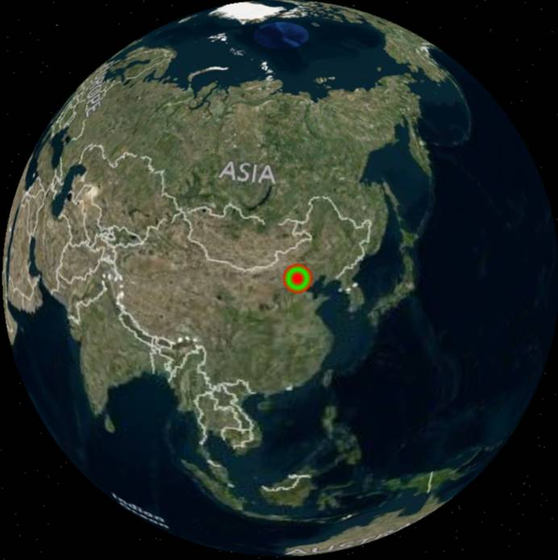
2、若是想要在自定义位置添加地标，首先鼠标单击指定位置，然后点击【添加地标】按钮，这里我以在北极添加地标为例：
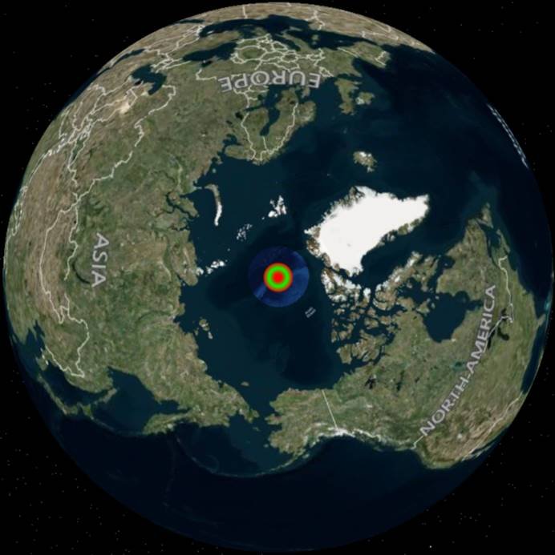
·删除地标：点击之后删除添加的地标。
·添加图形：主要提供了在三维球体上指定的位置添加多边形的功能。
操作方式：
1、点击【添加图形】按钮，开启图形绘制功能，在三维球体上鼠标左键点击不同的位置来确定图形的轮廓：

2、轮廓线确定以后，鼠标右键任意地区，完成多边形的绘制：
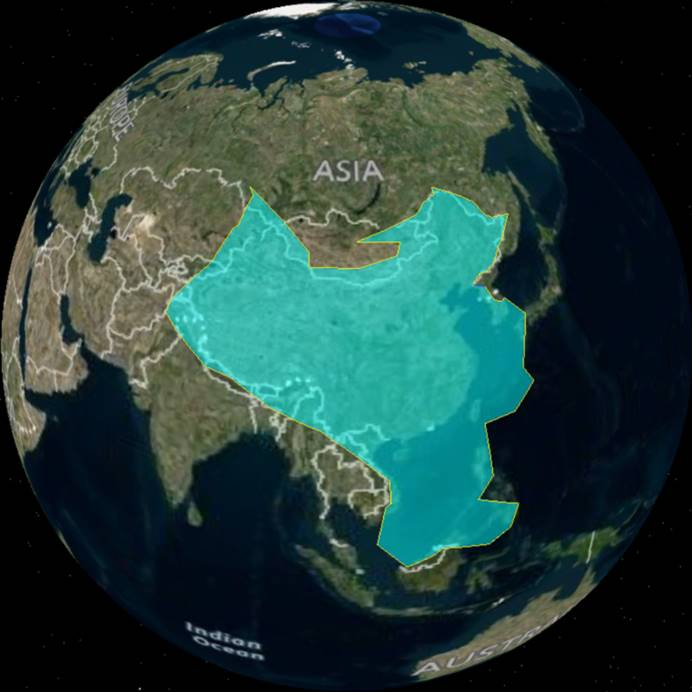
·删除图形：点击之后删除添加的多边形。
·添加路径：主要提供了在三维球体上指定的位置添加路径的功能。
操作方式：
1、点击【添加路径】按钮，开启路径绘制功能，在三维球体上鼠标左键点击不同的位置来确定路径的走向：

2、路径确定之后，鼠标右键任意区域，完成路径的绘制：

·删除路径：点击之后删除添加的路径。
·全幅显示：主要提供使三维球体回复到全球视图的状态：

·刷新视图：清除球体上的各种添加的状态，包括注释、地标、多边形、路径、动画效果以及三维模型，还可以解决各种异常状态，比如显示异常、加载异常、动画异常、操作异常等等。
·地址定位：根据当前用户的IP地址，在地图上定位出用户的具体位置。
·打印屏幕：截取客户端的视图，支持打印机设备进行打印：
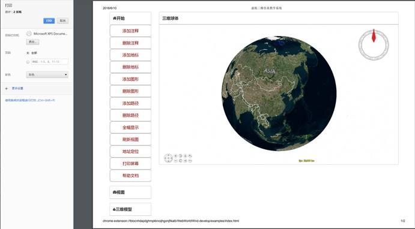
·帮助文档：打开帮助文档。
2.1.2 视图
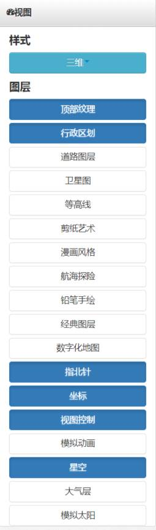
视图菜单提供样式、顶部纹理、行政区划、道路图层、卫星图、等高线、剪纸艺术、漫画风格、航海探险、铅笔手绘、经典图层、数字化地图、指北针、坐标、视图控制、模拟动画、星空、大气层、模拟太阳的操作。下面详细介绍各项的具体操作方式。
·样式：改变球体的显示方式，分别有：三维、球面投影、墨卡托投影、北极、南极、UPS北、UPS南、北极切面、南极切面9种显示方式：
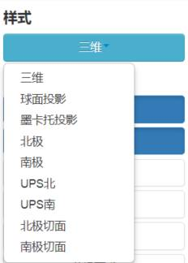
三维球体的显示：

墨卡托投影的显示：
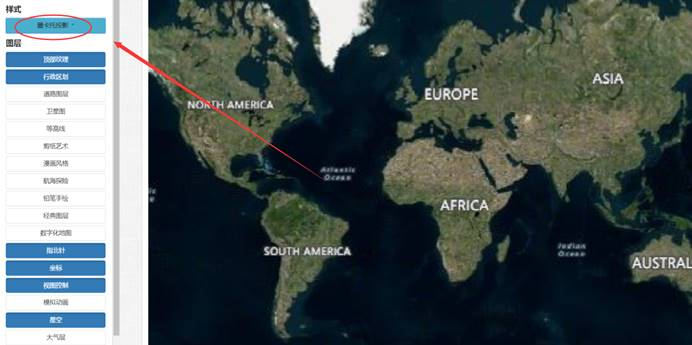
·顶部纹理：控制三维球体顶部北极地区的显示与关闭。
开启顶部纹理：

关闭顶部纹理：

·行政区划：控制三维球体区划图层的显示与关闭。
开启行政区划：

关闭行政区划：
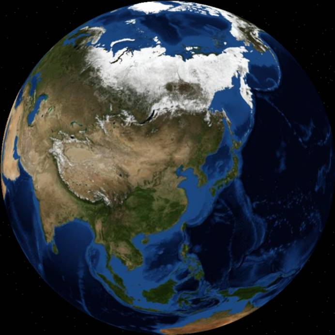
·道路图层：控制道路图层的显示与关闭：

·卫星图：控制卫星拍摄的图层的显示与关闭：

·等高线：控制等高线数据图层的显示与关闭：
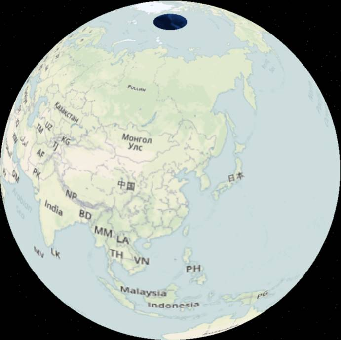
·剪纸艺术：控制剪纸风格的图层的显示与关闭：
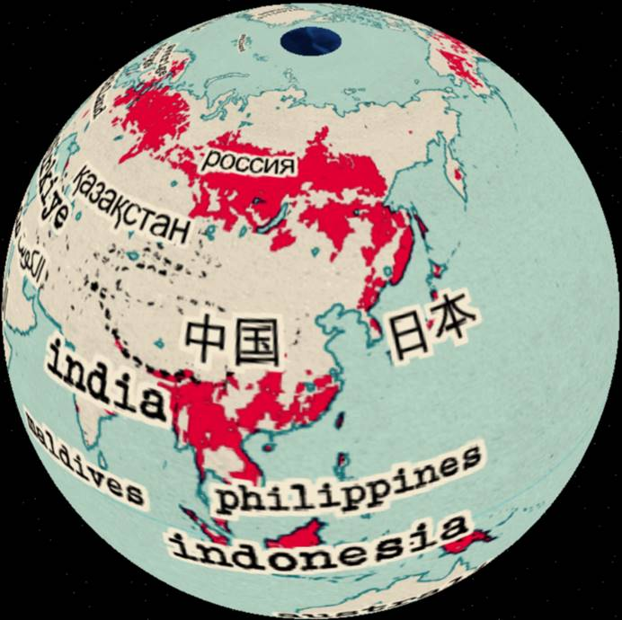
·漫画风格：控制漫画风格的图层的显示与关闭：
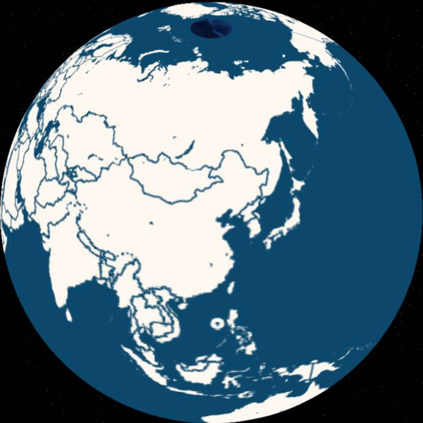
·航海探险：控制航海图风格的图层的显示与关闭：

·铅笔手绘：控制铅笔手绘风格的图层的显示与关闭：

·经典图层：控制经典的图层的显示与关闭：
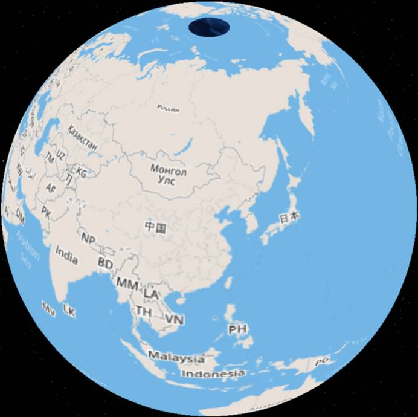
·数字化地图：控制数字化地图图层的显示与关闭：

·指北针：控制指北针的显示与关闭：

·坐标：控制坐标系统的显示与关闭：
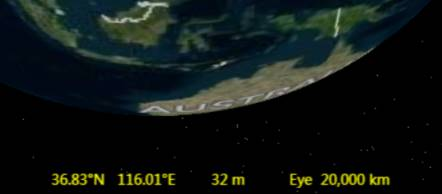
·视图控制：控制导航栏的显示与关闭：

·模拟动画：控制动画的显示与关闭。动画模拟了2004年1到12月全球的冰雪覆盖情况。

·星空：控制星空背景的显示与关闭：
·大气层：控制地球大气层的显示与关闭：
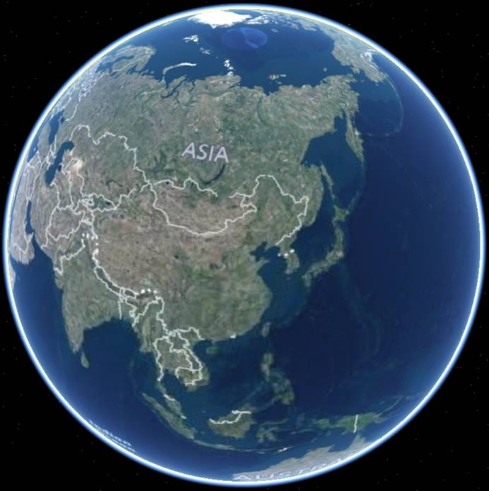
·模拟太阳：控制太阳照射情况的显示与关闭。根据当前时间，模拟出太阳照射地球的情况(这里需要注意的是，模拟太阳必须在大气层开启的情况下才能使用)：
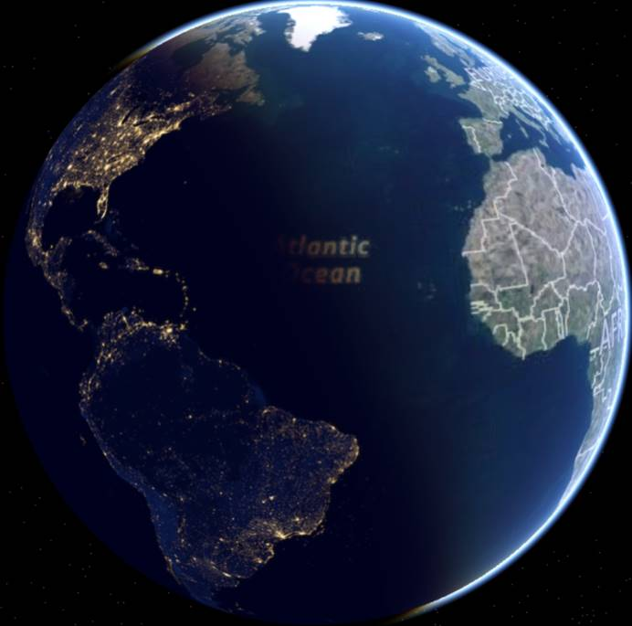
2.1.3 三维模型
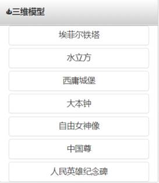
三维模型菜单主要提供埃菲尔铁塔、水立方、西庸城堡、大本钟、自由女神像、中国尊、人民英雄纪念碑模型的显示、定位与关闭。
·埃菲尔铁塔：
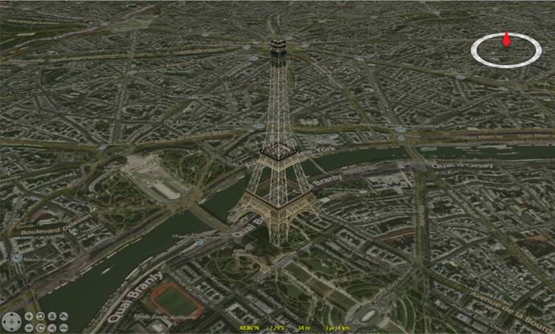
·水立方：
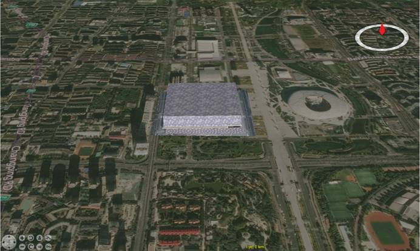
·西庸城堡：
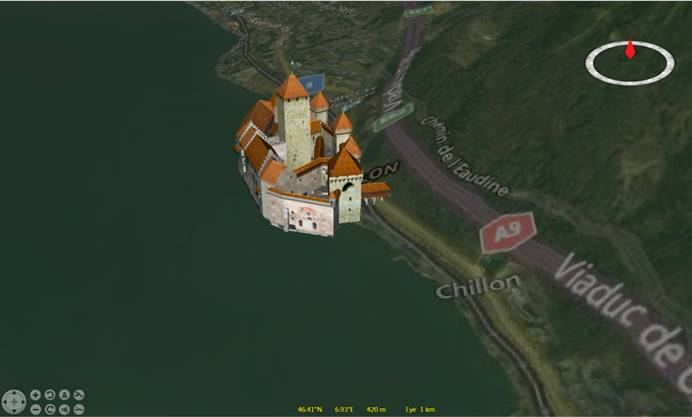
·大本钟：
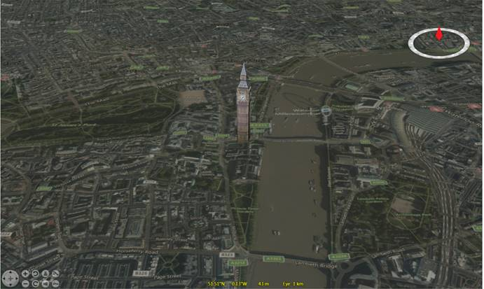
·自由女神像：
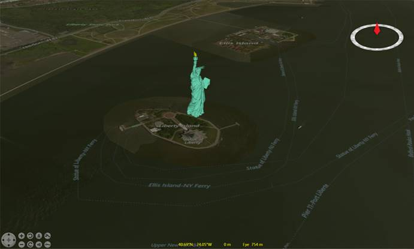
·中国尊：

·人民英雄纪念碑：

2.1.4 三维仿真
三维仿真菜单主要提供飞机飞行模拟和第一人称视角两种操作。下面详细介绍具体操作方式。
·飞行模拟：选取中国随机的地理位置，进行飞行模拟。

·第一人称视角：根据用户定位的位置，切换第一人称视角。
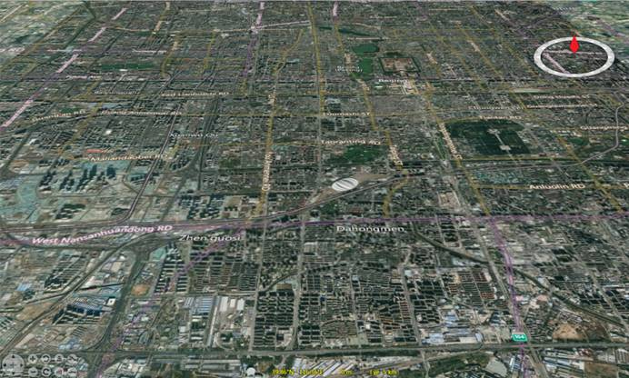
2.1.5 模型演示

模型演示菜单主要演示了全球的图层数据，例如：降雨量、世界地貌、世界人口、世界区划、地表温度、海洋温度、海洋深度、海水盐度、云层厚度、植被覆盖、臭氧含量、火灾多发区、气溶胶监测、阳光反射率、紫外线指数、太阳辐射量、水蒸气含量、一氧化碳浓度、二氧化氮浓度、海洋浮游植物、土地覆盖分类、向外长波辐射。下面详细介绍各项的具体操作。
·降雨量：

·世界地貌：
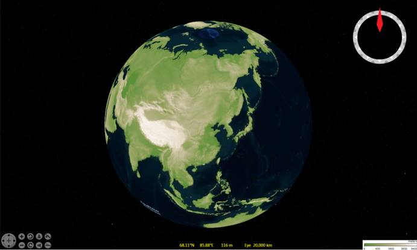
·世界人口：
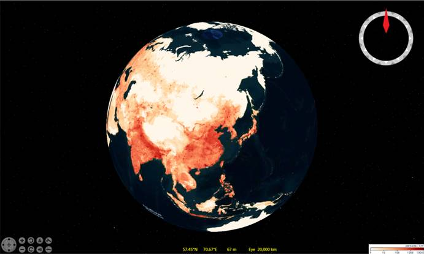
·世界区划：
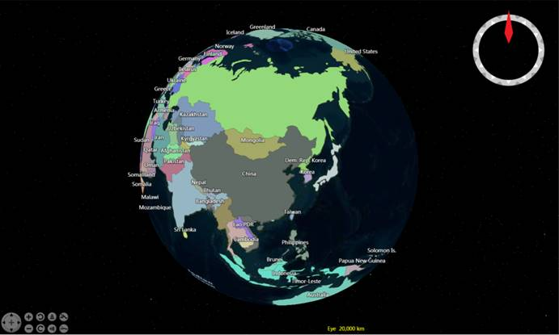
·地表温度：
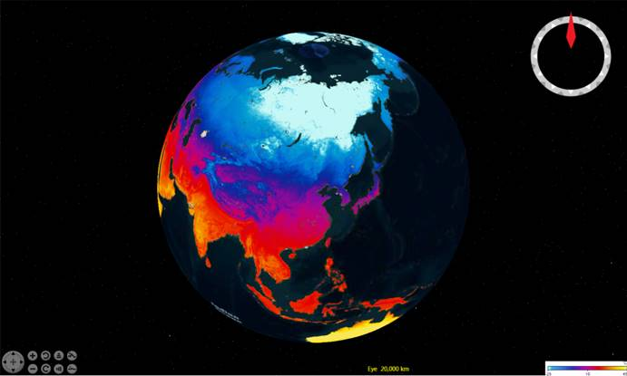
·海洋温度：
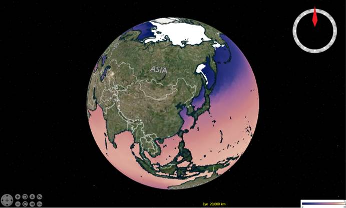
·海洋深度：

·海水盐度：
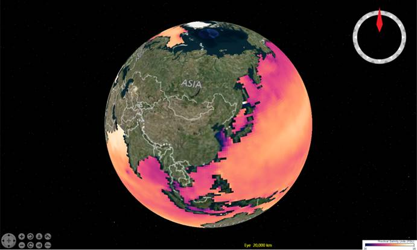
·云层厚度：
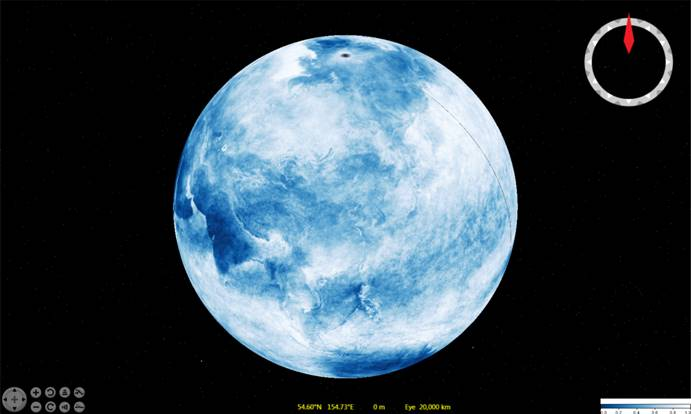
·植被覆盖：

·臭氧含量：

·火灾多发区：

·气溶胶监测：

·阳光反射率：
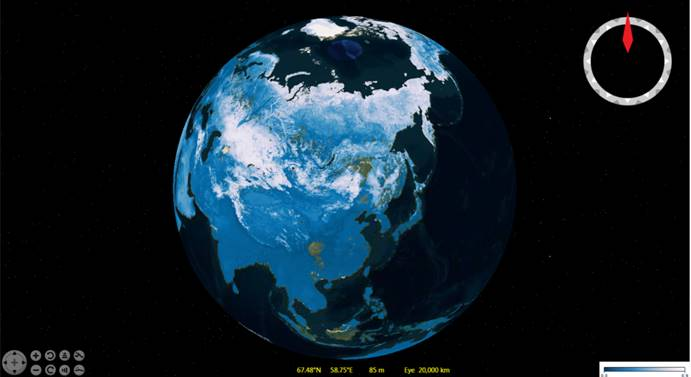
·紫外线指数：
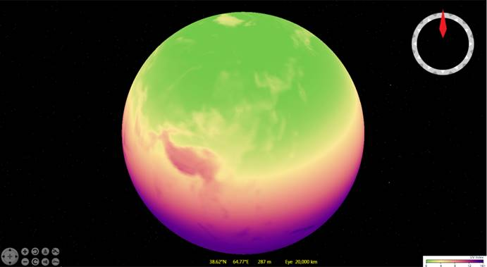
·太阳辐射量：
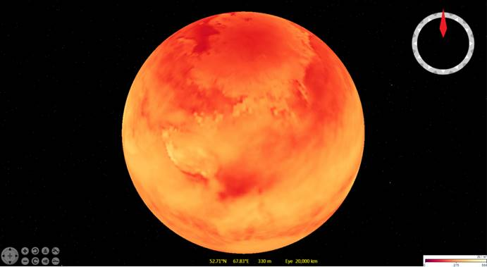
·水蒸气含量：

·一氧化碳浓度：

·二氧化氮浓度：

·海洋浮游植物：

·土地覆盖分类：
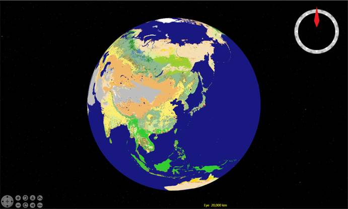
·向外长波辐射：
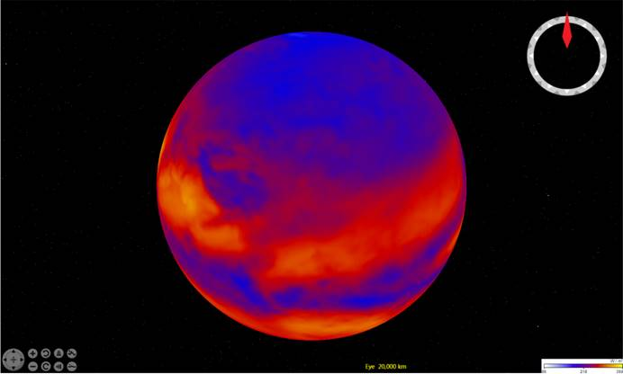
2.1.6 搜索

搜索主要包括前往和线路两项，具体操作说明下面详细介绍。
·前往：搜索输入框中输入地名，进行定位。

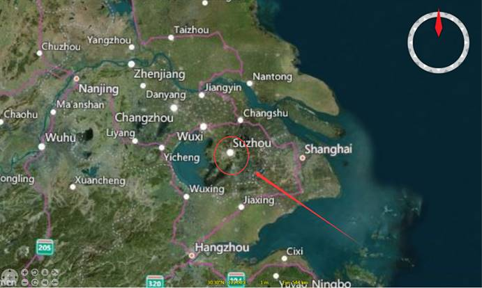
·线路：输入两个地名，进行定位并生成线路。

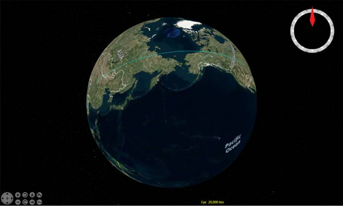